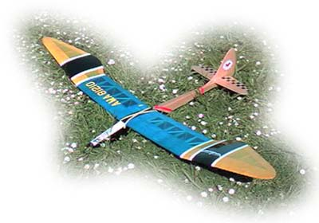

|
Flying with the San Francisco VulturesHow would you like to try this fine model?This scale TG-3 is our club glider.
Come on out and give it a try!

SF Vulture Ralph Vorhees built this wonderful model. It is a 60" wing span hand launched glider called the Lil' Bird. It is a smaller brother to the 118" span 1970's legend, the Bird of Time, designed by Dave Thornburg. Despite it's vintage styling, this glider has modern performance, and is often able to stay aloft in lift much too light for heavier models. As built by Ralph, this laser cut kit is a fine example of the model maker's art, combining classic design, traditional craftsmanship, and exceptional flying.
|
| Recognizing some of the confines of modern urban living, our models are usually gliders or electric powered, sometimes even both. Shown above is another of Ralph's models, a custom designed, twin motor glider. Powered with two inexpensive speed 400 class motors, it climbs briskly, is mildly aerobatic when desired, and can fly for over 10 minutes on a single charge.
Milton Mitchell's Super Sinbad is also a glider. With a 66" wingspan, the Sinbad continues to be popular due to it's 1940 old timer styling and good handling qualities. It is not a building project for the faint of heart however, as there are many pieces of balsa wood needed to create this elegant design.
| It is a pleasure to see this model in the air.
|
|
Bill Robinson regularly brings out this Zagi foam 60" flying wing. The Zagi really performs in the light slope lift on the edge of the field. If the lift fails, Bill entertains us with aerobatics. So far his record is 9 loops from a still air hand launch.
|
Bill Robinson's Zagi THL |
Group flying occurs, weather permitting, most weekend mornings at the Roosevelt Middle School near the Daly City/Pacifica town line. All are welcome, with encouragement and assistance gladly given. The club TG-3 glider has helped many beginners get a good start at this most wonderful pastime.
| For more information about the San Francisco Vultures, send an email to sfvultures@gmail.com or better yet, come to one of our meetings at the Randall Museum in San Francisco. View Maps to the Randall Museum and Roosevelt Middle School.
Return Copyright 1998-2009, Thayer Syme. All rights reserved | ||||||||||||